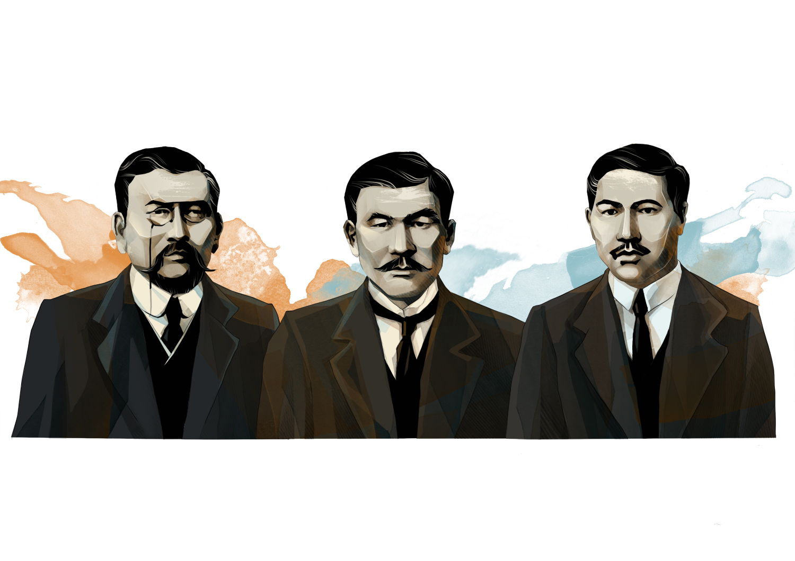

|
The Alash party was born from the national movement of |
 |
of that time. For example, Alikhan Bukeikhanov was one of the leaders of the Cadet Party. The most important issue was the agricultural one. The leaders of the Alash movement opposed the resettlement policy of the tsarist government and the seizure of the lands of the indigenous population in favor of the settlers. They achieved the receipt of Kazakh education and ownership of their land. In 1913, the main core of the future leader was grouped around the Kazakh newspaper (founders Alikhan Bukeikhanov, Akhmet Baitursynov and Mirzhakyp Dulatov). The authors of the publications in their articles popularized culture and science, raised questions of history, supported and developed literature in the Kazakh language.
Alash is the name of the mythical ancestor of the Kazakhs, taken to designate a socio-political movement, which later took shape as a party. In his articles, one of the leaders of the party and the future autonomy, Alikhan Bukeikhanov, wrote that the word “Alash” has been the battle cry of the Kazakhs for centuries. Alash-Orda is the name of the government (People's Council) of national-territorial autonomy formed in December 1917 on the territory of modern Kazakhstan.
The Alash party was born from the national movement of the Kazakh intelligentsia. Its participants fought for the rights of the Kazakh population to land, self-government, preservation of the language, national culture and traditions. They were members of the first two State Dumas of the Russian Empire and took part in the activities of the main political parties of that time. For example, Alikhan Bukeikhanov was one of the leaders of the Cadet Party. The most pressing issue was the agricultural one. The leaders of the Alash movement opposed the resettlement policy of the tsarist government and the seizure of the lands of the indigenous population in favor of the settlers. They sought for the Kazakh population to obtain ownership of their land. In 1913, the main backbone of the future party grouped around the Kazakh newspaper (founders Alikhan Bukeikhanov, Akhmet Baitursynov and Mirzhakyp Dulatov). The authors of the publication popularized culture and science in their articles, covered historical issues, supported and developed literature in the Kazakh language.
In fact, the program of the Alash party was not discussed and adopted at the general congress. Initially, the All-Kazakh Congress instructed its delegates sent to the All-Russian Muslim Council to develop the party program. In September 1917, a member of the municipal council from Kazakhstan, Zhansha Dosmukhamedov, reported that the Kazakh deputies had not yet arrived. The time for voting in the Constituent Assembly was approaching, and the draft program was developed by Bukeikhanov, Baitursynov, Dulatov, Gumarov, Zhazhdibaev and Birmakanov. The project consisted of 10 points and was published on the pages of the Kazakh newspaper on November 21. The draft program was a combination of socialist and bourgeois-democratic ideas. It stated that Russia should become a democratic federal republic with autonomy for the Kazakhs within it. Equality was guaranteed for everyone, regardless of origin, religion and gender. Freedom of speech, press, and unions was declared.